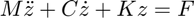
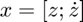
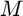
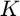
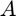
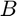
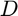
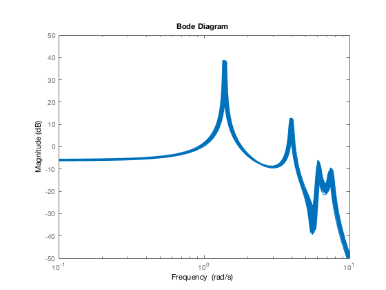

Contents
Parameter uncertainty in Flexible structure
Model properties
- 4 mode flexible structure
- uncertain mass, damping and stiffness parameters
Use ureal parameters (12 in all) to obtain uss model. All parameters enter in rank=1 fashion, so each has only one copy in final LFT model
% UC Berkeley, ME C231B/EECS C220C, Spring 2017
Lumped parameter values
M = 1; K = 1; xi = 0.01; C = 2*sqrt(M*K)*xi;
Distribute these over N elements
N = 4; Kv = repmat(N*K,[1 N]); Mv = repmat(M/N,[1 N]); Cv = repmat(C,[1 N]);
Add uncertainty to each term
For east access, store each uncertain element in an array, with appropriate name, for use later in building the state-space model.
percK = 5; Kv = [ureal('k1',Kv(1),'Percentage',percK), ... ureal('k2',Kv(2),'Percentage',percK), ... ureal('k3',Kv(3),'Percentage',percK), ... ureal('k4',Kv(4),'Percentage',percK)]; perkM = 5; Mv = [ureal('m1',Mv(1),'Percentage',perkM), ... ureal('m2',Mv(2),'Percentage',perkM), ... ureal('m3',Mv(3),'Percentage',perkM), ... ureal('m4',Mv(4),'Percentage',perkM)]; perkC = 5; Cv = [ureal('c1',Cv(1),'Percentage',perkC), ... ureal('c2',Cv(2),'Percentage',perkC), ... ureal('c3',Cv(3),'Percentage',perkC), ... ureal('c4',Cv(4),'Percentage',perkC)];
Mass, Damping and Stiffness Matrices
Standard  model. Define . Form , and  matrices, all of which are uncertain.
Mmat = diag(Mv)
Mmat =
Uncertain matrix with 4 rows and 4 columns.
The uncertainty consists of the following blocks:
m1: Uncertain real, nominal = 0.25, variability = [-5,5]%, 1 occurrences
m2: Uncertain real, nominal = 0.25, variability = [-5,5]%, 1 occurrences
m3: Uncertain real, nominal = 0.25, variability = [-5,5]%, 1 occurrences
m4: Uncertain real, nominal = 0.25, variability = [-5,5]%, 1 occurrences
Type "Mmat.NominalValue" to see the nominal value, "get(Mmat)" to see all properties, and "Mmat.Uncertainty" to interact with the uncertain elements.
Cmat = -[-Cv(1)-Cv(2) Cv(2) 0 0;... Cv(2) -Cv(2)-Cv(3) Cv(3) 0;... 0 Cv(3) -Cv(3)-Cv(4) Cv(4);... 0 0 Cv(4) -Cv(4)]
Cmat =
Uncertain matrix with 4 rows and 4 columns.
The uncertainty consists of the following blocks:
c1: Uncertain real, nominal = 0.02, variability = [-5,5]%, 1 occurrences
c2: Uncertain real, nominal = 0.02, variability = [-5,5]%, 1 occurrences
c3: Uncertain real, nominal = 0.02, variability = [-5,5]%, 1 occurrences
c4: Uncertain real, nominal = 0.02, variability = [-5,5]%, 1 occurrences
Type "Cmat.NominalValue" to see the nominal value, "get(Cmat)" to see all properties, and "Cmat.Uncertainty" to interact with the uncertain elements.
Kmat = -[-Kv(1)-Kv(2) Kv(2) 0 0;... Kv(2) -Kv(2)-Kv(3) Kv(3) 0;... 0 Kv(3) -Kv(3)-Kv(4) Kv(4);... 0 0 Kv(4) -Kv(4)]
Kmat =
Uncertain matrix with 4 rows and 4 columns.
The uncertainty consists of the following blocks:
k1: Uncertain real, nominal = 4, variability = [-5,5]%, 1 occurrences
k2: Uncertain real, nominal = 4, variability = [-5,5]%, 1 occurrences
k3: Uncertain real, nominal = 4, variability = [-5,5]%, 1 occurrences
k4: Uncertain real, nominal = 4, variability = [-5,5]%, 1 occurrences
Type "Kmat.NominalValue" to see the nominal value, "get(Kmat)" to see all properties, and "Kmat.Uncertainty" to interact with the uncertain elements.
Create A and B matrices of uncertain system.
Model has independent forces at each mass as inputs. All states are listed as outputs.  matrix depends on mass, damping and stiffness matrices, while  only depends on mass matrix. Since outputs consist of all states, and  matrices are simple.
A = [zeros(N,N) eye(N); inv(Mmat)*[-Kmat -Cmat]]; B = [zeros(N,N); inv(Mmat)*eye(4)]; C = eye(2*N); S = ss(A,B,C,0)
S =
Uncertain continuous-time state-space model with 8 outputs, 4 inputs, 8 states.
The model uncertainty consists of the following blocks:
c1: Uncertain real, nominal = 0.02, variability = [-5,5]%, 1 occurrences
c2: Uncertain real, nominal = 0.02, variability = [-5,5]%, 1 occurrences
c3: Uncertain real, nominal = 0.02, variability = [-5,5]%, 1 occurrences
c4: Uncertain real, nominal = 0.02, variability = [-5,5]%, 1 occurrences
k1: Uncertain real, nominal = 4, variability = [-5,5]%, 1 occurrences
k2: Uncertain real, nominal = 4, variability = [-5,5]%, 1 occurrences
k3: Uncertain real, nominal = 4, variability = [-5,5]%, 1 occurrences
k4: Uncertain real, nominal = 4, variability = [-5,5]%, 1 occurrences
m1: Uncertain real, nominal = 0.25, variability = [-5,5]%, 1 occurrences
m2: Uncertain real, nominal = 0.25, variability = [-5,5]%, 1 occurrences
m3: Uncertain real, nominal = 0.25, variability = [-5,5]%, 1 occurrences
m4: Uncertain real, nominal = 0.25, variability = [-5,5]%, 1 occurrences
Type "S.NominalValue" to see the nominal value, "get(S)" to see all properties, and "S.Uncertainty" to interact with the uncertain elements.
Check nominal system poles
damp(pole(S.NominalValue))
Pole Damping Frequency Time Constant
(rad/TimeUnit) (TimeUnit)
-1.41e-01 + 7.52e+00i 1.88e-02 7.52e+00 7.08e+00
-1.41e-01 - 7.52e+00i 1.88e-02 7.52e+00 7.08e+00
-9.39e-02 + 6.13e+00i 1.53e-02 6.13e+00 1.07e+01
-9.39e-02 - 6.13e+00i 1.53e-02 6.13e+00 1.07e+01
-4.00e-02 + 4.00e+00i 1.00e-02 4.00e+00 2.50e+01
-4.00e-02 - 4.00e+00i 1.00e-02 4.00e+00 2.50e+01
-4.82e-03 + 1.39e+00i 3.47e-03 1.39e+00 2.07e+02
-4.82e-03 - 1.39e+00i 3.47e-03 1.39e+00 2.07e+02
Bode magnitude from to
Plot 250 samples of Bode Magnitude plot
nSamples = 250; bodemag(usample(S(4,2),nSamples)) ylim([-50 50]) xlim([0.1 10])
Attribution
Copyright 2016-17, Andy Packard. This work is licensed under the Creative Commons Attribution-NonCommercial-ShareAlike 3.0 Unported License. To view a copy of this license, visit http://creativecommons.org/licenses/by-nc-sa/3.0/ or send a letter to Creative Commons, 444 Castro Street, Suite 900, Mountain View, California, 94041, USA.
File Information
disp(mfilename)
stateSpaceParameterUncertainty